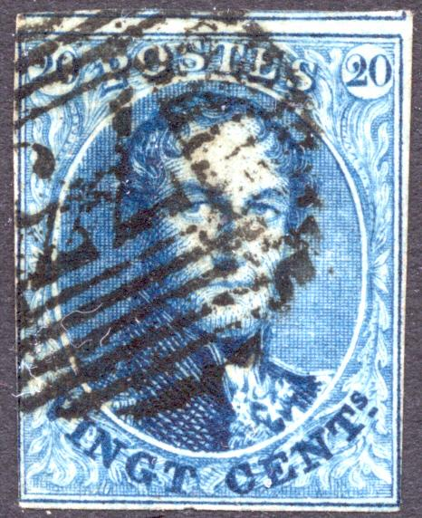
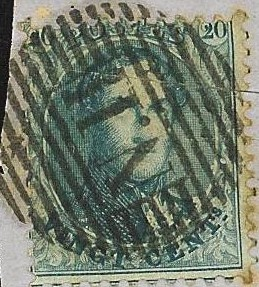

('Cachet a barre' cancel)
Return To Catalogue - Belgium 1869-1892
Currency: 100 Centimes = 1 Franc
Note: on my website many of the
pictures can not be seen! They are of course present in the
catalogue;
contact me if you want to purchase it.

('Cachet a barre' cancel)
The only cancel that I have seen on these stamps are the so-called 'Cachet a barre' cancels (or bar killer), used from 1849 to 1864. According to the information that Vincent Vriends send me, there are cachet a barre cancels with 8 bars (both vertical and horizontal), 10 thick bars, 14 bars and 17 bars. I know of the following numbers (with corresponding towns):
With horizontal lines:
1: Aerschot
2: Alost (two types of this cancel seem to exist)
3: Andenne
4: Antwerpen (Anvers)
5: Arlon
6: Assche
7: Ath
8: Aubel
9: Audenaerde
10: Avelghem
11: Aywaille
12: Barveaux
13: Bastogne
14: Beaumont
15: Beauraing
16: Beveren
17: Beverloo
18: Binche
19: Boom
20: Bouilon
21: Boussu
22: Braine le Compte
23: Brugge (Bruges)
24: Brussels (Bruxelles, Brussel)
25: Charleroi
26: Châtelineau
27: Chimay
28: Ciney
29: Courtrai (Kortrijk)
30: Couvin
31: Deynze
32: Diest
33: Dinant
34: Dison
35: Dixmude
36: Dolhain-Limbourg
37: Eecloo
38: Enghien
39: Fleurus
40: Florennes
41: Florenville
42: Fontaine l'Eveque
43: Fosses
44: Furnes
45: Ghent (Gand, Gent)
46: Gedinne
47: Gembloux
48: Genappe
49: Gheel
50: Gosselies
51: Grammont
52: Habay-la-Neuve
53: Hal
54: Hamme
55: Hannut
56: Harlebeke
57: Hasselt
58: Heer
59: Herenthals
60: Herve
61: Houffalize
62: Huy
63: Iseghem
64: Jemeppe
65: Jemappes
66: Jodoigne
67: La Roche
68: Le Fayt
69: Lens
70: Le Roeulx
71: Lessines
72: Leuze
73: Liege (Luik)
74: Lierre
75: Lokeren
76: Louvain (Leuven)
77: Maeseyck
78: Malines
79: Marche
80: Marchienne-au-Pont
81: Mariembourg
82: Menin
83: Mons (Bergen)
84: Mouscron (Moeskroen)
85: Namen (Namur)
86: Neufchâteau
87: Nieuport
88: Ninove
89: Nivelles
90: Ostende
91: Pecq
92: Peer
93: Pepinster
94: Peruwelz
95: Perwez
96: Philippeville
97: Poperinghe
98: Puers
99: Quievrain
100: Renaix
101: Rochefort
102: Roulers
103: St.Ghislain
104: St.Hubert
105: St.Nicolas
106: St.Trond
107: Seneffe
108: Soignies
109: Sottegem
110: Spa
111: Spy
112: Stavelot
113: Tamise
114: Termonde
115: Thielt
116: Thourout
117: Thuin
118: Tirlemont
119: Tongres
120: Tournai
121: Tubise
122: Turnhout
123: Verviers
'123 A.1' Verviers ('A.1' placed below '123')
124: Vielsalm
125: Vilvoorde (Vilvorde)
126: Virton
127: Vise
128: Wareghem
129: Waremme
130: Wavre
131: Wervicq
132: Wetteren
133: Ypres
134: Zele
135: Zelzaete
136: Mariembourg (8 bars)
137: Aeltre
138: Chaudfontaine
139: Landen
140: Brasschaet
141: Herbesthal (8 bars)
142: Westerloo
143: Ghistelles or Lanaeken
144: Somergem or Duffel
145: Vertryck (8 bars)
146: Mettet or Fexhe-Le-Ht-Clocher
147: Eghezee
148: Walcourt
149: Solre-sur-Sambre or Erqulelinnes
150: Ruysbroeck
151: Contich
152: Plaschendaele or Melle
153: Bleomendaele
154: Audegem or Plaschendaele (8 bars)
155: Ans
156: Chenee
157: Nessonvaux
158: Ecaussinnes
159: Luttre
160: Roux
161: Farciennes or Chievre-attre (8 bars)
162: Tamines
163: Floreffe
164: Thulin
165: Jurbise
166: Brugelette
167: Chievre-Attre or Nechin
168: Ottignies (8 bars)
169: Templeuve
170: Nechin or Hansbeke (8 bars)
171: Lens (8 bars)
172: Trooz (8 bars)
173: Denderleeuw (8 bars)
174: Antoing
175: Ensival
176: Herstal (8 bars)
177: Ternath (8 bars)
178: Esschen (8 bars)
179: Buggenhout (8 bars)
180: Gouy-Les-Pieton (8 bars)
181: Laeken (8 bars)
182: Lede (8 bars)
183: Londerzeel (8 bars)
184: Mariemont (8 bars)
185: Seraing (8 bars)
186: Dour (8 bars)
187: Lanklaer (8 bars)
188: Assche (8 bars)
189: Nameche (8 bars)
190: Havelanges (8 bars)
191: Wellin (8 bars)
192: Warneton (8 bars)
193: Etalle (8 bars)
194: Glons (8 bars)
195: Bree (8 bars)
196: Paliseul (8 bars)
197: Gosselies-Courcelles (8 bars)
198: Mont-St.Guibert (8 bars)
199: Auvelais (8 bars)
200: Uccle (8 bars)
201: Anderlecht (8 bars)
202: Fleron (8 bars)
203: Gilly (8 bars)
204: Jumet (8 bars)
205: Paturages (8 bars)
206: Vieux-Dieu (8 bars)
207: Esneux (8 bars)
208 St.Josse-Ten-Noode (8 bars)
With vertical lines ('obliteration de distribution'; auxiliary
post office)

1: Aeltre or Nameche or Staden
2: Amay
3: Antoing
4: Aubange
5: Beeringen
6: Bilsen
7: Blankenberghe
8: Brasschaet
9: Bree
10: Cappelle-au-Bois
11: Chaudfontaine
12: Cruyshautem
13: Dour
14: Duffel
15: Eghezee
16: Fexhe-le-haut-Clocher
17: Frasnes
18: Ghistelles
19: Givry
20: Glons
21: Havelange
22: Henri-Chapelle
23: Herck-la-Ville
24: Herinnes
25:Heyst-op-den-Berg
26: Hoogstraeten
27: Isque
28: Landen
29: Leau
30: Lennick-St.Quentin
31: Looz
32: Maldegem
33: Marbais
34: Martelange
35: Mechelen
36: Mettet
37: Moll
38: Nandrin
39: Nederbrakel
40: Nil-St.Vincent
41: Oosterzeele
42: Oostmalle
43: Oostvleteren
44: Oreye
45: Overpelt
46: Paliseul
47: Rance
48: St.Leger
49: Santhoven
50: Solre-sur-Sambre
51: Somergem
52: Tervueren
53: Vertryck
54: Vroenhoven
55: Waerschot
56: Walcourt
57: Warneton
58: Waterloo
59: Wellin
60: Wespelaer
61: Westerloo
62: Wuestwezel
63: Willebroeck
66: Mechelen
64: La Louviere or Hamme-Mille
65: Warnant-Dreye
66: Mechelen (Meuse) or Lanklaer or Ocquier
67: Roeulx
68: Assche or Lillo
69: Hansbeke or Theux
70: Braine-L’Alleud
71: Engis
72: Capellen
73: Eeckeren
74: Ottignies or Grez-Doiceau
75: Annevoie
76: Assesse
77: Terwagne
78: Etalle or Waesmunster
79: Wervicq
80: Sonbreffe
81: Melle or Silly
82: Denderleeuw or Ouffet
83: Bruly
84: Orchimont
85: Vierves
86: Rhisne
87: Grupont
88: Hotton
89: Recogne
90: Hameau
91: Mariemont or Burdine
92: Arendonck
93: Does not exist
94: Lichtervelde
95: Dottignies
96: Boitsfort
97: Calmpthout
98: Cerfontaine
99: Feluy-Arquennes
100: Gerpinnes
101: La Hulpe
102: Lodelinsart
103: Loochristi
104: Momignies
105: Quevy
106: Weert-St. Georges
107: Westcapelle
108: Ardenne
109: Meulebeke
110: Eecke (Nazareth)
111: Flemalle
112: Does not exist.
113: Jauche
114: Berchem
115: Bouwel
116: Nylen
117: Thielen
118: Bracquegnies
119: Obourg
120: Rebaix
121: St. Laurent
122: Havre
123: Poix
124: Marbehan
125: Ligne
126: Basecles
127: Pommeroeul
128: Alveringhem
129: Ardoye
130: Erezee
131: Evergem
132: Havinnes
133: Herzele
134: Moorslede
135: Montzen
136: Ruysselede
137: St. Gilles-Waes
138: Somerg(h)em
139: Stekene
140: Messancy or Boortmeerbeek
141: Putte
142: Wachen
143: Gysegem
144: Tronchiennes
145: Sweveghem
'NORD' cancel


'N II', 'OIII' and 'MIV' cancels
Some cancels with numerals, but with only 8 or 10 bars also exist. I've also seen 'NORD' and 'EST' instead of a number in a similar cancel (see image above).
Other railway ('ambulant' or 'spoorweg') cancels exist, for
examples bar cancels with
'AN.1' Bruxelles-Anvers
'AN.2' (Nord 2) Anvers-Bruxelles
'E I' (Est 1, I've seen this cancel in green), Liege-Verviers or
Bruxells-Verviers
'E II', Liege-Verviers or Verviers-Bruxelles
'E III', Liege-Verviers or Verviers-Bruxelles
'N I' (Nord I) Bruxelles-Anvers
'N II' (Nord II), Anvers-Bruxelles
'O I' (Ouest I), Gand-Mouscron or Ostende-Bruxelles
'O II', Gand-Mouscron or Ostende-Bruxelles
'O III' (Ouest III, ligne Gand-Ostende),
'O 4', Ostende-Bruxelles
'O 5', Ostende-Bruxelles
'M I', Bruxelles-Quiévrain
'M II', Quiévrain-Bruxelles
'M III', ?
'M IV' (Midi N°4, ligne Tournai-Jurbise), exists horizontally
and vertically
'M V' (Midi N°5; ligne Namur-Bruxelles), exists horizontally and
vertically
'M VI' (Midi N°6, ligne Bruxelles-Namur), exists horizontally
and vertically
'Obliteration Rurale' rural postmark consisting of a circle with
lines, no number in the center

'Meteore de Bruxelles' or 'Meteoorstempel' (meteorite cancel)
'24' surrounded by stripes
According to my information numeral cancels with
dots were used from 1864 to 1873. Some towns with their
corresponding numbers:
1: Aeltre
2: Aerschot
3: Alost
4: Alveringhem
5: Amay
7: Anderlecht
8: Annevoie
9: Ans
10: Anthee
11: Antoing
12: Anvers
13: Ardenne
14: Ardoye
15: Arendonck
16: Arlon
17: Assche
18: Asesse
19: Ath
20: Aubel
21: Audenaerde
22: Auvelais
23: Avelghem
24: Aywaille
25: Anvaing
26: Asseneden
27: Attert
28: Barry-Maulde
29: Barvaux
30: Basecles
31: Bastogne
32: Beaumont
33: Beauraing
34: Beeringen
35: Beloeil
36: Berchem
37: Bertrix
38: Beveren
39: Beverloo
40: Bilsen
41: Binche
42: Blankenberghe
43: Blaton
44: Bloemendaele
45: Boitsfort
46: Boom
47: Boortmeerbeek
48: Bouillon
49: Boussu
50: Bouwel
51: Bracquegnies
52: Braine l'Alleud
53: Braine le Compte
54: Brasschaet
55: Brecht
56: Bree
57: Brugelette
58: Bruges (Brugge)
59: Bruly
60: Brussels (Bruxelles, Brussel)
61: Brussels-East
62: Brussels-Midi
63: Brussels-North
64: Brussels-West (Molenbeek)
65: Buggenhout
66: Burdine
67: Basel
68: Baudour
69: Berchem
70: Anvers Station
71: Calmpthout or Challeroi (Ville Haute)
72: Capelle-Au-Bois
73: Capellen
74: Celles
75: Cerfontaine
76: Champion
77: Charleroi
78: Chatelineau
79: Chaudfontaine
80: Chenee
81: Chievre-Attre
82: Chimay
83: Ciney
84: Comblain-Au-Pont
85: Comines
86: Contich
87: Courtrai
88: Court St.Etienne
89: Couvin
90: Cruyshautem
91: Couillet
92: Cherain
93: Denderleeuw
94: Deynze
95: Diest
96: Dinant
97: Dison
98: Dixmude
99: Dolhain (Limbourg)
100: Dottgnies
101: Dour
102: Duffel
103: Doel
104: Deux-Acren
105: Ecaussinnes
106: Eecke or Nazareth
107: Eeckeren
108: Eecloo
109: Egheeze
110: Enghien
111: Engis
112: Ensival
113: Erezee
114: Erquelinnes
115: Ertvelde
116: Esneux
117: Esschen
118: Etalle
119: Evergem
120: Esmael
121: Eerneghem
122: Haine-St. Pierre
123: Farciennes
124: Feluy-Arquennes
125: Fexhe-Le-Ht-Clocher
126: Flemalle
127: Fleron
128: Fleurus
129: Floreffe
130: Florennes
131: Florenville
132: Fontaine l'Eveque
133: Fosses
134: Fraiture
135: Framerie
136: Frasnes
137: Furnes
138: Forest
139: Gand Station
140: Gand St. Sauveur
141: Gand (Gent)
142: Gavere
143: Gedinne
144: Gembloux
145: Genappe
146: Gerpinnes
147: Gheel
148: Ghistelles
149: Gilly
150: Givry
151: Glons
152: Gosselies
153: Gosselies-Courcelles
154: Gouy-le-Pieton
155: Grammont
156: Grez-Doiceau
157: Grupont
158: Gysegem
159: Gingelom
160: Gand (town in Bruges)
161: Hennuyeres
162: Habay la Neuve
163: Hal
164: Hameau or Ham-Sur-Heure
165: Hamme-Mille
165: Hamme
167: Hannut
168: Hansbeke
169: Harlebeke
170: Hasselt
171: Havelange
172: Havinnes
173: Havre
174: Heer
175: Herbesthal
176: Herck-La-Ville
177: Herenthals
178: Herstal
179: Herve
180: Herzele
181: Heyst-Op-Den-Berghe
182: Hoogstraeten
183: Hotton
184: Houffalize
185: Hougaerde
186: Huy
187: Haecht
188: Haversin or Grivegnee
189: Hooglede
190: Heron
191: Ingelmunster
192: Iseghem
193: Isque
194: Jamoigne
195: Jauche
196: Jemappes
197: Jemeppe
198: Jodoigne
199: Jumet
200: Jurbise
201: Lille-St.Hubert
202: Laeken
203: La Hulpe
204: La Louviere
205: Lanaeken
206: Landen
207: Langemarck
208: Lanklaer
209: Laroche
210: Lede
211: Lede
212: Lennicq-St.Quentin
213: Lens
214: Lessines
215: Leuze
216: Lichtervelde
217: Liege (Luik)
218: Lierre
219: Ligne
220: Lillo
221: Lodelinsart
222: Lokeren
223: Londerzeel
224: Loochristi
225: Looz
226: Leuven (Louvain)
227: Luttre
228: Landeghem
229: Loth
230: Liege (Guillemain)
231: Maeseyck
232: Maldeghem
233: Malines
234: Manage
235: Marbais
236: Marbehan
237: Marche
238: Marchienne au Pont
239: Mariembourg
240: Mariemont
241: Martelange
242: Melle
243: Menin
244: Merbes le Chateau
245: Messancy
246: Messines
247: Mettet
248: Meulebeke
249: Moerbeke
250: Moll
251: Momignies
252: Mons (Bergen)
253: Mont St.Guibert
254: Montzen
255: Moorslede
256: Morialme
257: Mouscron
258: Moustier
259: Merckem
260: Merchtem
261: Godarville
262: Gammerages
263: Nameche
264: Namur (Namen)
265: Nandrin
266: Nechin
267: Nederbrakel
268: Nessonvaux
269: Neufchateau
270: Nieuport
271: Ninove
272: Nivelles
273: Nylen or Neufvilles
274: Nevele
275: Neuve-Eglise
276: Obourg
277: Ocquier
278: Oosterzeele
279: Oostmalle
280: Oostvleteren
281: Orchimont
282: Oreye
283: Ostende
284: Ottignies
285: Ouffet of Hamoir
286: Overpelt of Lommel
287: Ostende (Station) or Oostcamp
288: Jupille
289: Paliseul
290: Paturages
291: Peer
292: Pepinster
293: Peruwelz
294: Perwez
295: Philippeville
296: Plaschendaele
297: Poix
298: Pommeroeul
299: Poperinghe
300: Puers
301: Putte
302: Pont-A-Celles
303: Quaregnon
304: Quevy
305: Quievrain
306: Ransart
307: Rance
308: Rebaix
309: Recogne
310: Renaix
311: Rhisne
312: Rochefort
313: Roclenge
314: Roeulx
315: Roulers
316: Rousbrugge
317: Roux
318: Ruysbroek
319: Ruysselede
320: Saventhem
321: Ste Cecile
322: St.Gislain
323: St.Gilles-Waes
324: St.Hubert
325: St.Josse ten Noode
326: St. Laurent
327: St. Leger
328: St.Nicholas
329: St.Trond
330: Santhoven
331: Selzaete
332: Seraing
333: Sibret
334: Silly
335: Sivry
336: Soignies
337: Sombreffe
338: Somergem
339: Sottegem
340: Spa
341: Staden
342: Stavelot
343: Stekene
344: Sweveghem orSt. Bernard
345: Synghem
346: Schellebelle
347: Scheldewindeke
348: Tamines
349: Tamise
350: Templeuve
351: Termonde
352: Ternath
353: Tervueren
354: Terwagne
355: Theux
356: Thielen
357: Thielt
358: Thourhout
359: Thuin
360: Thulin
361: Tirlemont
362: Tongres
363: Tournai
364: Tronchiennes
365: Trooz
366: Tubize
367: Turnhout
368: Tessenderloo
369: Uccle
370: Tainignies
371: St.Gilles Bruxelles
372: Roisin
373: Vertryck
374: Verviers
375: Vielsalm
376: Vierves
377: Vieux-Dieu
378: Vilvorde
379: Vitron
380: Vise
381: Villers-La-Ville
382: Wasmes
383: Wacken
384: Waereghem
385: Waerschoot
386: Waesmunster
387: Walcourt
388: Wandre
389: Waremme
390: Warnant-Dreye
391: Warneton
392: Waterloo
393: Wavre
394: Weert-St.Georges
395: Wellin
396: Werbomont
397: Wervicq
398: Wespelaer
399: Westcapelle
400: Westerloo
401: Wetteren
402: Willebroeck
403: Winghe-St. Georges
404: Wuustwezel
405: Wyngene
406: Weerde
407: Wolverthem
408: Ypres
409: Yvoir
410: Zele
411: Jette
412: Jabbeke
413: Liege-Outre-Meuse
414: Bruxelles (Rue De La Loi)
415: Bruxelles (Ch. De Louvain) of Flobecq
416: Bruxelles (Rue Rogier) of Anvers-Bassins
417: Bruxelles (Josaphat)
418: Lembecq
419: Saintes
420: Ghlin
421: Blandain
422: Bassilly
423: Ghislenghien
424: Bruxelles (Luxembourg)
425: La Pinte
426: Surice
427: Louvain (Station)
428: Namur (Station)
429: Braine-Le-Chateau
430: Olsene
431: Meerhout
432: Ougree
433: Corbeek-Loo
434: Malderen
435: Borgerhout
436: Merxem
437: Houdeng-Gougnies
438: Nimuy
439: Harmignies
440: Verdrin
441: Estinnes-Haulchin
442: Jambes
443: Seneffe
444: Wevelghem
445: Heyst-Sur-Mer
446: Baesrode
447: Charleroi (Faubourg)
448: Ledeberg
449: Schaerbeel
450: Cureghem (Station)
451: Lincent
452: Remicourt
453: Rosoux-Goyer
454: Mons Station
R: Rebut-cancel (only one known)
Railway cancels:
AM.BR.AR.: Amb. Bruxelles-Arlon
E. 1: Bruxelles-Verviers
E. 2: Bruxelles-Verviers
E. 3: Bruxelles-Verviers
EST 3B: Bruxelles-Verviers
E. IV: Liege-Erquelinnes
E. V: Liege-Erquelinnes
M. 1: Bruxelles-Quievrain
M. 2: Bruxelles-Quievrain
M. 3: Bruxelles-Erquel.
M. 4: Tournai-Jurbise
M. 5: Bruxelles-Namur
M. 6: Bruxelles-Namur
N. 1: Bruxelles-Anvers
N. 2: Bruxelles-Anvers
O. 1: Bruxelles-Ostende
O. 2: Bruxelles-Ostende
O. 3: Gand-Mouscron
Examples:


This so-called 'Roulette' cancel was used from 1869 onwards for savings bank bills ('Caisse d'Epargne, schoolsparen).
A whole 'school savings sheet' with 2 c blue stamps with this
cancel
Cancels with two languages (French and Flamish), here
"BRUXELLES BRUSSELS". In case there was no good
translation in the other language dots were used at the bottom,
here "VAULX" and "BOOM".
See also: http://www.stampsoftheworld.co.uk/wiki/Category:Belgium_Postmarks.
Stamps cancels - Timbres-poste obliterations


{kind=link}
{kind=link}
{kind=link}
{kind=link}
{kind=link}